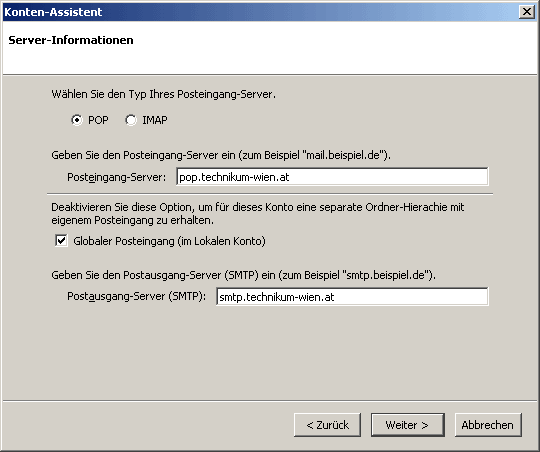
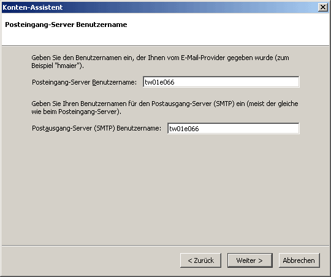
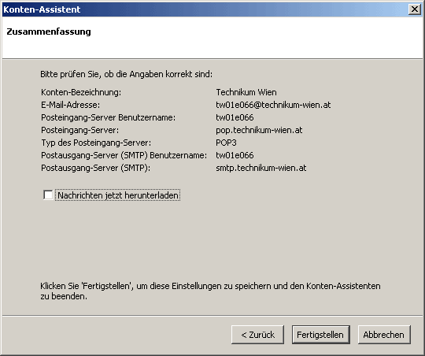
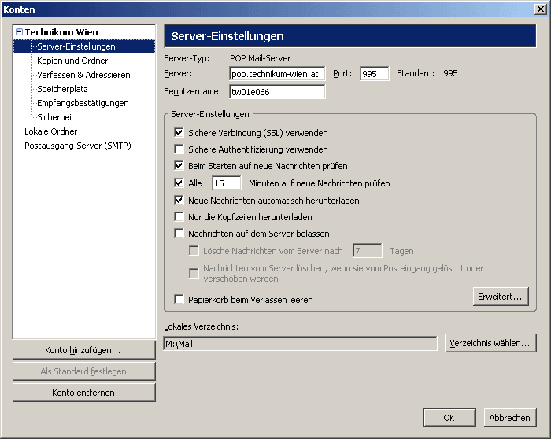
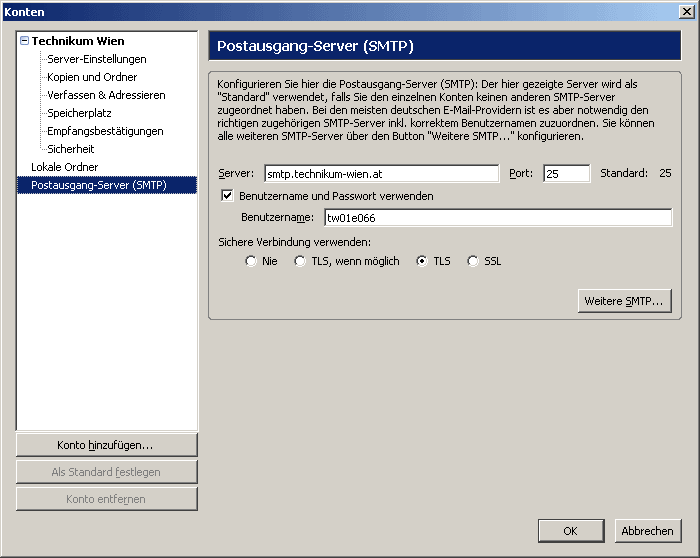

Sie benötigen ...
... einen PC mit installiertem Betriebssystem und Zugang zum Internet.
... eine gültige User ID mit
Passwort
... Mozilla Thunderbird
POP oder IMAP?
Beim Empfang Ihrer eMail-Nachrichten vom Server können Sie zwischen den Protokollen POP (Post Office Protocol) und IMAP (Internet Message Access Protocol) wählen. Mit POP werden die eingehenden Nachrichten auf den lokalen PC heruntergeladen, bei IMAP hingegen verbleiben sie (und auch eventuell angelegte Ordner) am Mailserver. IMAP ist daher vor allem dann zu empfehlen, wenn Sie auf Ihre Nachrichten von mehreren unterschiedlichen Standorten (z.B. von der Fachhochschule und von zu Hause) zugreifen wollen. Zum Einrichten eines Mailkontos starten Sie Mozilla Tunderbird entweder durch Doppelklick auf das Icon am Desktop oder über Start - Programme - Mozilla Tunderbird.Anmerkung: Sollte auf dem PC bereits ein anderes eMail-Programm installiert und konfiguriert sein, erscheint beim ersten Startvorgang meist die Frage, ob Sie die Einstellungen der bereits angelegten eMail-Konten importieren wollen. Im Zweifelsfall wählen Sie hier Nein, falls erforderlich können die entsprechenden Daten auch später importiert werden (näheres dazu am Ende dieses Dokuments unter Häufig benötigte Einstellungen und Funktionen).
Grundsätzlich gibt es zwei Möglichkeiten, den Programmpunkt für die Einrichtung eines eMail-Kontos unter Mozilla Tunderbird aufzurufen. beim ersten Aufruf des Programms meldet sich der Start-Assistent . Sie können aber auch jederzeit über extras - Konten den Assistenten starten und ein neues Konto einrichten.
Mailkonto einrichten
Der Start-Assistent führt Sie durch die Konfiguration von Mozilla Tunderbird..

Wählen Sie hier den Punkt Emailkonto und klicken Sie auf Weiter.
Die weitere Vorgehensweise mit dem Startassistenten entspricht der Einrichtung auf normalem Weg ab dem Fenster Servertyp.
Kontenassistent manuell starten
Um ein Mailkonto einzurichten, wählen Sie den Menüpunkt Extras - Konten.Sie können entweder ein neues Konto hinzufügen, oder bereits vorhandende Konten darstellen bzw. bearbeiten. (Dies gilt auch für Verzeichnisse und Adressbücher.) Wählen Sie Ein neues E-Mail-Konto hinzufügen und klicken Sie auf Weiter.

In dem daraufhin erscheinenden Fenster müssen Sie den benötigten Servertyp wählen. Falls Sie IMAP verwenden, wählen Sie bitte IMAP (falls Sie POP verwenden, dann POP3). Klicken Sie auf Weiter.

Danach erscheint das Fenster Internet-E-Mail-Einstellungen.
Unter Benutzerinformationen im Feld Ihr Name: geben Sie bitte Ihren vollständigen Namen ein. Im Feld E-Mail-Adresse: geben Sie Ihre eMail-Adresse ein (acountname@technikum-wien.at für Studierende, bzw. vorname.nachname@technikum-wien.at für Mitarbeiter).
Unter Anmeldeinformationen geben Sie nun im Feld Benutzername: Ihre UserID ein und unter Kennwort Ihr Passwort. Falls Sie nicht bei jedem Verbindungsaufbau Ihr Passwort erneut eingeben möchten, können Sie die Option Kennwort sichern auswählen. (Bitte achten Sie darauf, dass das Kästchen Anmeldung durch gesicherte Kennwortauthentifizierung aktiviert ist.)
Nun müssen Sie die Serverinformationen eingeben:
Im Feld Posteingangsserver geben Sie
pop.technikum-wien.at
bzw. imap.technikum-wien.at (falls der Zugriff
via IMAP erfolgen soll). Im Feld Postausgangsserver geben Sie smtp.technikum-wien.at ein.
Danach erscheint ein Fenster mit der Information, dass die Einrichtung Ihres Kontos abgeschlossen ist. Mit Klick auf Fertig stellen schließen Sie den Assistenten.
Um weitere Einstellungen vorzunehmen oder zu ändern, wählen Sie erneut Extras - Konten. Dort können Sie Ihr Konto anzeigen lassen oder bearbeiten.
Eine Zusammenfassung über weitere häufig benötigte Einstellungen und Funktionen finden Sie am Ende dieses Dokuments.
Häufig benötigte Einstellungen und Funktionen
Die Menüstruktur für die Konfiguration von Mozilla Tunderbird und besonders von Mozilla Tunderbird ist unter Umständen sehr unübersichtlich. Als zusätzliche Erschwernis weichen die Bezeichnungen der Menüpunkte und Funktionen von Version zu Version ab.Im Folgenden finden Sie daher eine Zusammenstellung der am häufigsten benötigten Einstellungen und Funktionen.
Servernamen, UserID und Passwort eintragen
Hier können Sie die Daten für Posteingangsserver (POP bzw. IMAP) und
Postausgangsserver (SMTP) und die Anmeldeinformationen und das entsprechende
Passwort) festlegen.


Bitte achten Sie auch darauf, dass die beiden Kästchen vor Sichere Verbindung (SSL) verwenden und Postausgangsserver - Benutzername und Passwort verwenden aktiviert sind.
| Mozilla Tunderbird | Extras - Konten [Kontoname] - Servereinstellungen |
| Mozilla Tunderbird | Extras - Konten [Kontoname] - Postausgangsserver |
Name und eMail-Adresse eintragen
Hier können Sie Ihren Namen und Ihre eMail-Adresse (accountname@technikum-wien.at für Studierende bzw. Vorname.Nachname@technikum-wien.at für Mitarbeiter) festlegen.| Mozilla Tunderbird | Extras - Konten [Kontoname] - Kontoeinstellungen |
Abfrageintervall für Nachrichten
Wenn Sie über eine ständige Verbindung zum Internet verfügen, können Sie festlegen, wie oft geprüft werden soll, ob neue Nachrichten am Mailserver eingelangt sind.Bitte wählen Sie das Intervall nicht zu kurz, da es sonst zu einer unnötigen Belastung des Mailservers kommen kann. Ein zulässiger Wert wäre z.B. 10 oder 15 Minuten.
| Mozilla Tunderbird | Extras - Optionen - Servereinstellungen - Alle XX Minuten auf neue Nachrichten prüfen |
POP: Nachrichten am Server belassen
Wenn Sie Ihre Nachrichten per POP abfragen und trotzdem am Server belassen möchten (wenn Sie z.B. die Nachrichten von mehreren PCs abfragen wollen), können Sie das hier festlegen.Bitte achten Sie aber darauf, dass zu viele am Server belassene Nachrichten unseren Mailserver überlasten können und solche Nachrichten daher ab einem gewissen Umfang automatisch archiviert und aus der Mailbox gelöscht werden. Sie sollten diese Funktion daher mit Vorsicht einsetzen!
Studierende und Mitarbeiter, die Ihre Nachrichten am Server belassen wollen, sollten einen Umstieg auf das Protkoll IMAP in Erwägung ziehen.
| Mozilla Tunderbird | Extras - Optionen - Servereinstellungen - Nachrichten auf dem Server belassen |
Filterregeln erstellen
Sie können Regeln festlegen, um beispielsweise Nachrichten von bestimmten Absendern oder mit bestimmten Inhalten automatisch in spezielle Ordner zu verschieben oder zu löschen.| Mozilla Tunderbird | Extras - Filter |
Headerzeilen darstellen
Die Headerzeilen einer Nachricht geben Aufschluss darüber, von welchem PC bzw. über welche Mailserver eine Nachricht verschickt wurde. Außerdem können die Headerzeilen noch weitere Informationen wie z.B. den verwendeten eMail-Klienten des Absenders oder bestimmte Kennzeichnungen vom Mailserver (z.B. SPAM-Flags) enthalten.| Mozilla Tunderbird 4 | Ansicht - Kopfzeilen |
Import von Nachrichten bzw. Adressbüchern
An dieser Stelle können Sie Nachrichten, Adressbücher und Konto-Daten von anderen Mail-Programmen importieren.| Mozilla Tunderbird 4 | Extras - importieren |
Priorität einer ausgehenden Nachricht ändern
Sie können die Prioriät bzw. Dringlichkeit einer ausgehenden Nachricht festlegen. Sofern der eMail-Klient des Empfängers diese Funktion unterstützt, wird bei ihm die entsprechende Priorität angezeigt.| Mozilla Tunderbird 4 | (Neue Nachricht erstellen) - Einstellungen - Priorität |
Anfordern von Lese und Empfangsbestätigungen für Nachrichten
Wenn Sie eine Lesebestätigung anfordern und der eMail-Klient des Empfängers dies unterstützt, erhalten Sie eine Rückmeldung, sobald Ihre Nachricht gelesen wurde.Hier können Sie diese Anforderung für ihre Nachrichten festlegen:
| Mozilla Tunderbird 4 | Optionen - Extras - erweitert - Empfangsbestätigungen |
Mailing-Parameter
In der folgenden Tabelle finden Sie eine Zusammenstellung der erforderlichen Kontodaten und Servernamen für Mitarbeiter und Studierende des Technikum Wien.| MitarbeiterInnen (Mailbox) | Studierende (Unet) | |
| eMail-Adresse | vorname.nachname@technikum-wien.at | accountname@technikum-wien.at |
| POP-Server (Posteingang) | pop.technikum-wien.at | pop.technikum-wien.at |
| IMAP-Server (Posteingang) | imap.technikum-wien.at | imap.technikum-wien.at |
| SMTP-Server (Postausgang) | smtp.technikum-wien.at | smtp.technikum-wien.at |